Tradesman Coffee Shop & Lounge
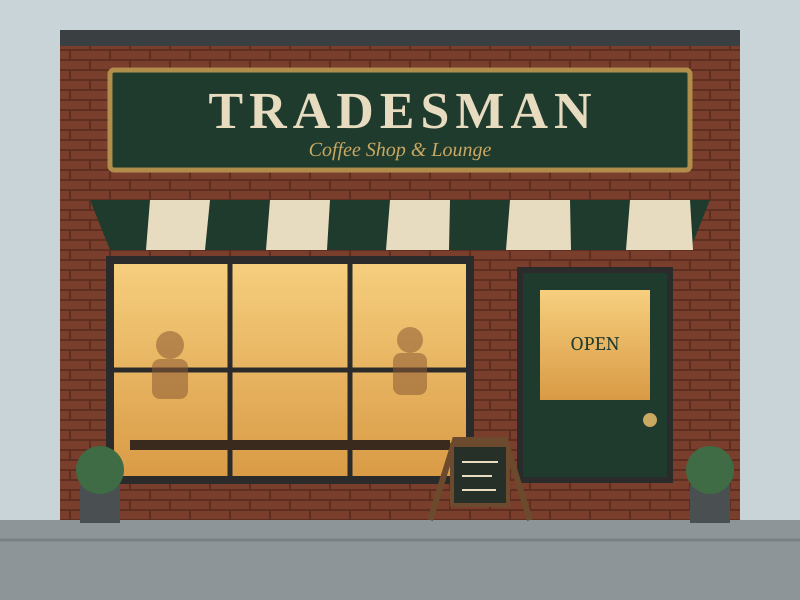
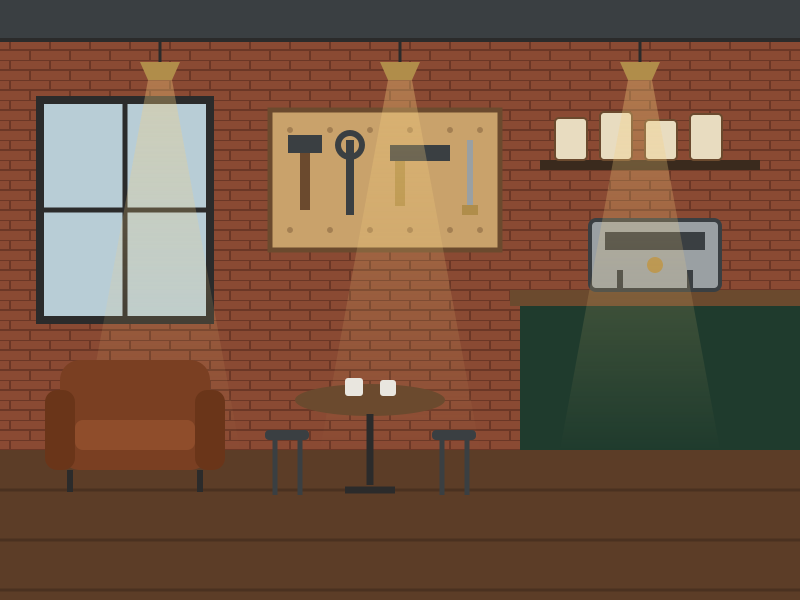
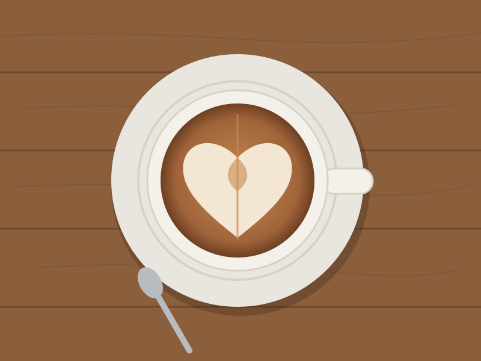
Location: Downtown
This spacious café offers a delicious selection of sandwiches, wraps, pastries, coffee, and tea, along with a variety of refrigerated desserts and snacks. My favorites are the Southwest Egg Wrap and Madagascar Vanilla Latte. I deducted 1 point from the menu rating because the drinks can occasionally be inconsistent in taste.
The café also provides comfortable seating, with large tables that are ideal for working or studying. Free Wi-Fi is available. The décor has a charming, historic feel, with antique trinkets scattered throughout the café, adding to its cozy and distinctive atmosphere. The staff are friendly and service is generally fast. The size and layout of the café makes the space feel uncrowded even when it is busy. It is also relatively quiet inside.
Sip Café
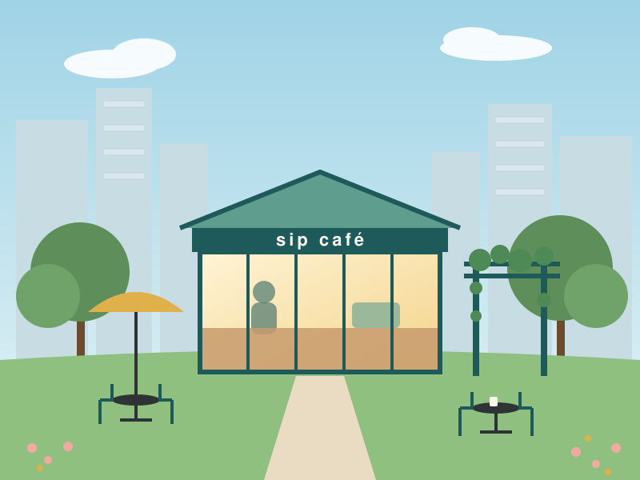
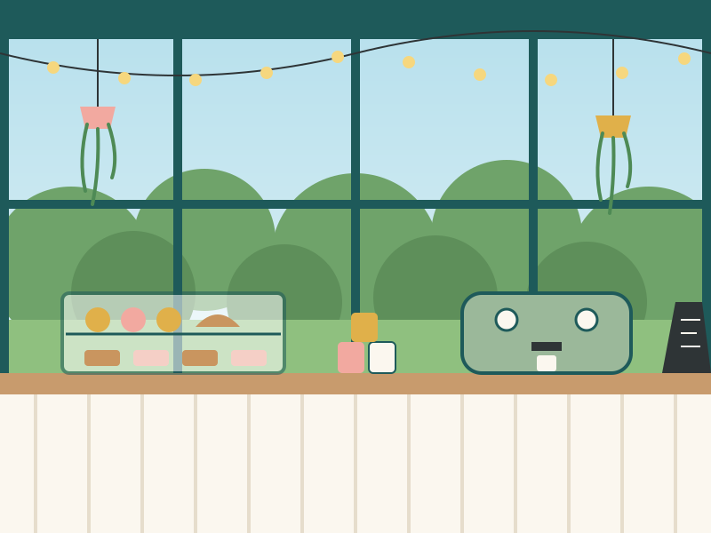
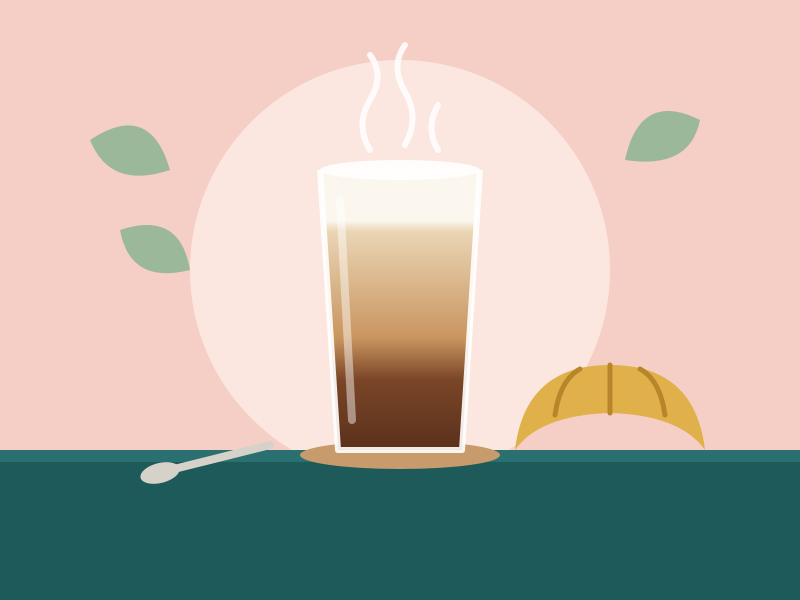
Location: Downtown
This is a cute instagrammable, glasshouse-style café in Post Office Square. Their menu includes sandwiches, salads, coffee, and tea. Their lattes are pretty good. I recommend the Salted Caramel Latte, though you may want to ask them to go easy on the syrup, as it is extremely sweet otherwise. They also make an incredible Pumpkin Latte in the fall. I have not tried their food items, but they seem to attract a steady lunch crowd, which suggests the food is well-liked.
The main attraction of this café, however, is its aesthetics. It sits in the middle of a garden decorated with fairy lights and has a view of a beautiful fountain. Their outdoor seating includes couches and is perfect for summer hang-outs, when the weather is warm. Indoor seating is limited, though, and the small, closely packed tables make it less conducive for working and studying. It also gets very loud and crowded inside during lunch and breakfast.
Thinking Cup
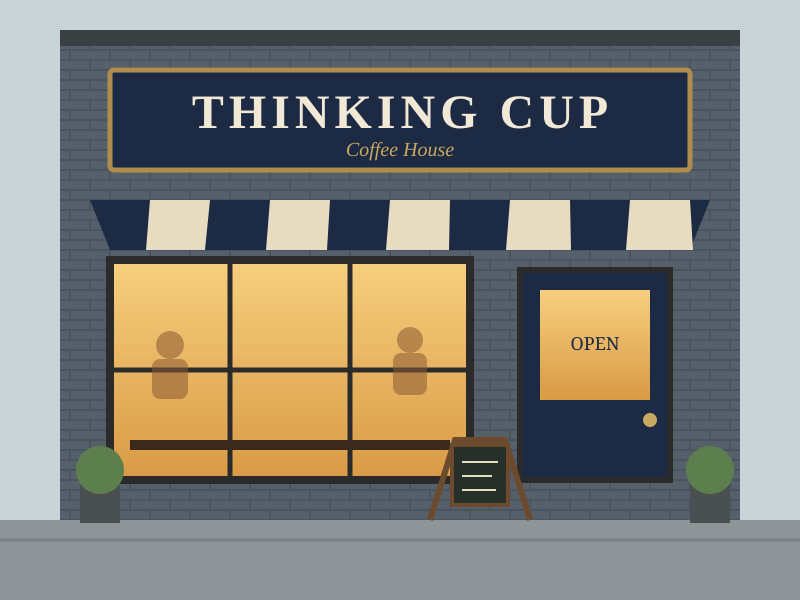
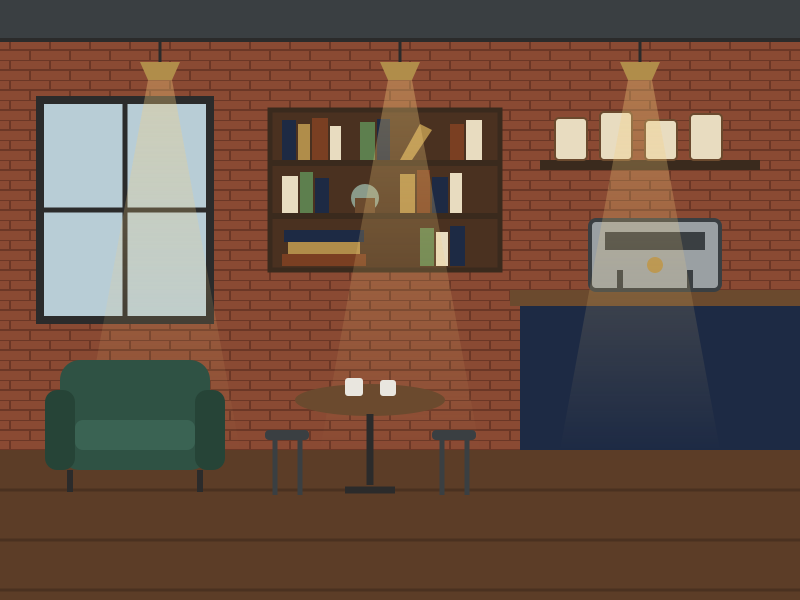
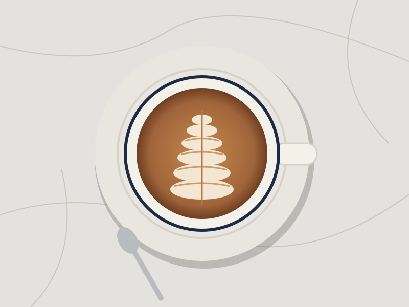
Location: Downtown, North End, Back Bay
Thinking Cup is a local café with three locations in the city. I frequent the Downtown location as I pass by it during my commute. It is a small, cozy café offering delicious coffee and tea, as well as food items such as pastries and sandwiches. Their coffee is brewed using Stumptown Coffee Roasters beans, and they offer a variety of flavored lattes. The Honey Cinnamon and Pumpkin Spice lattes are my favorites. The flavored lattes are only mildly sweet, which suits my taste.
I would not recommend working or studying here, however. The cafe's compact size means that seating is very limited, with small tables positioned close together. The café is also extremely popular and tends to be busy and crowded throughout the day, especially on weekends.
Ogawa Coffee
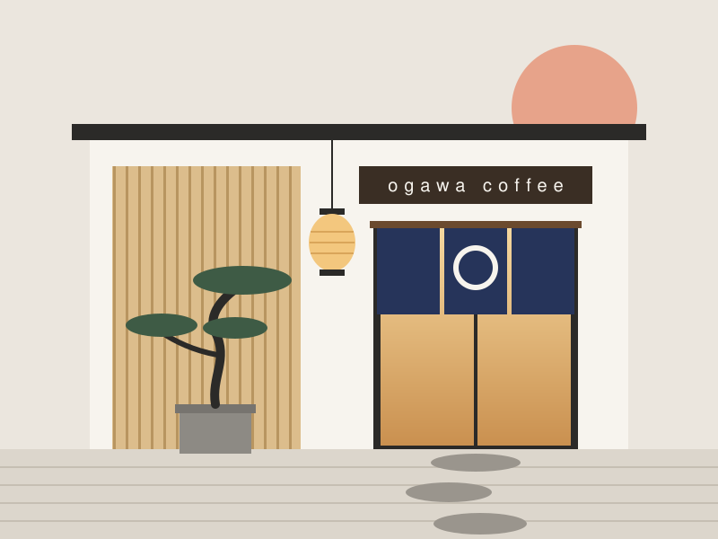
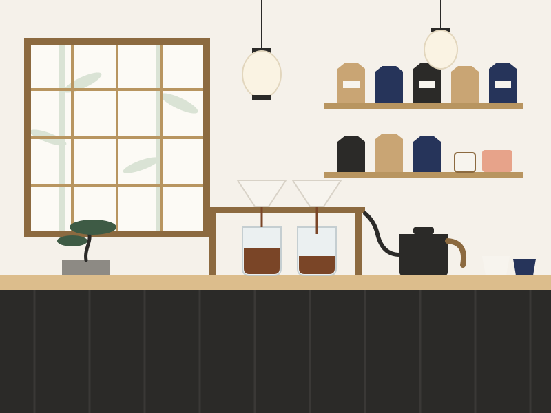
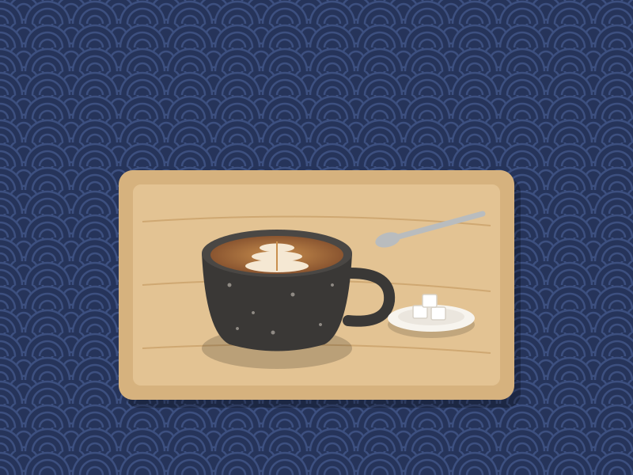
Location: Downtown
Ogawa Coffee is the Boston outpost of a Japanese coffee chain and its first location outside of Japan. It is known for its matcha and hojicha lattes, but the café also offers espresso drinks and tea. The matcha and coffee beans are sourced from Japan. The menu also includes desserts and breakfast/lunch fare, such as sandwiches, avocado toast and quiche. However, they charge higher prices than other cafés in the area.
The space itself has a clean, urban aesthetic and is great for hanging out, working, or studying when it is quiet. The café has large tables and free Wi-Fi. I would avoid lunch hour and weekends, though. The café is small, seating is limited, and the line of people ordering and waiting fills the room fast. Service is slow, so wait times get long when it's busy.
Farmers Horse Coffee
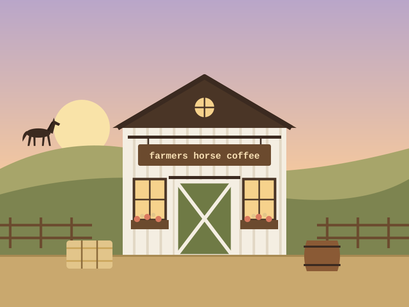
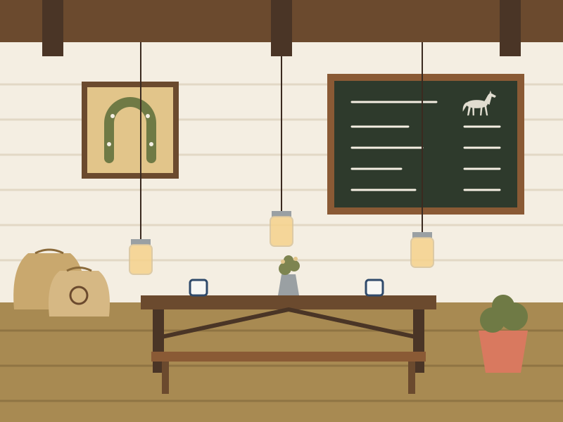
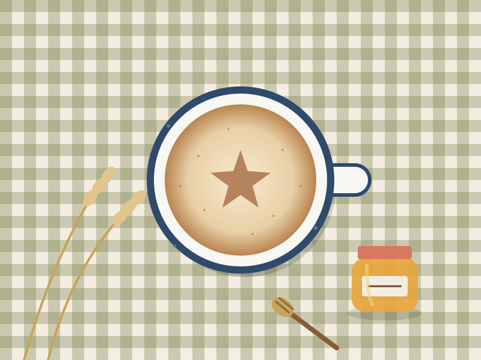
Location: Fenway
This café serves Ethiopian coffee — the beans are imported directly and roasted in small batches. The banana bread and honey lavender lattes are especially great. They also serve breakfast and lunch food including pastries, bagels, sandwiches, etc.
The café is small and warmly decorated, creating a cozy atmosphere. It also has a heated, greenhouse-style outdoor seating area. Board games are provided, making it a great place to hang out with friends. However, the café tends to get crowded due to its limited seating. The size of the tables are also extremely small, which makes it less conducive for working or studying.